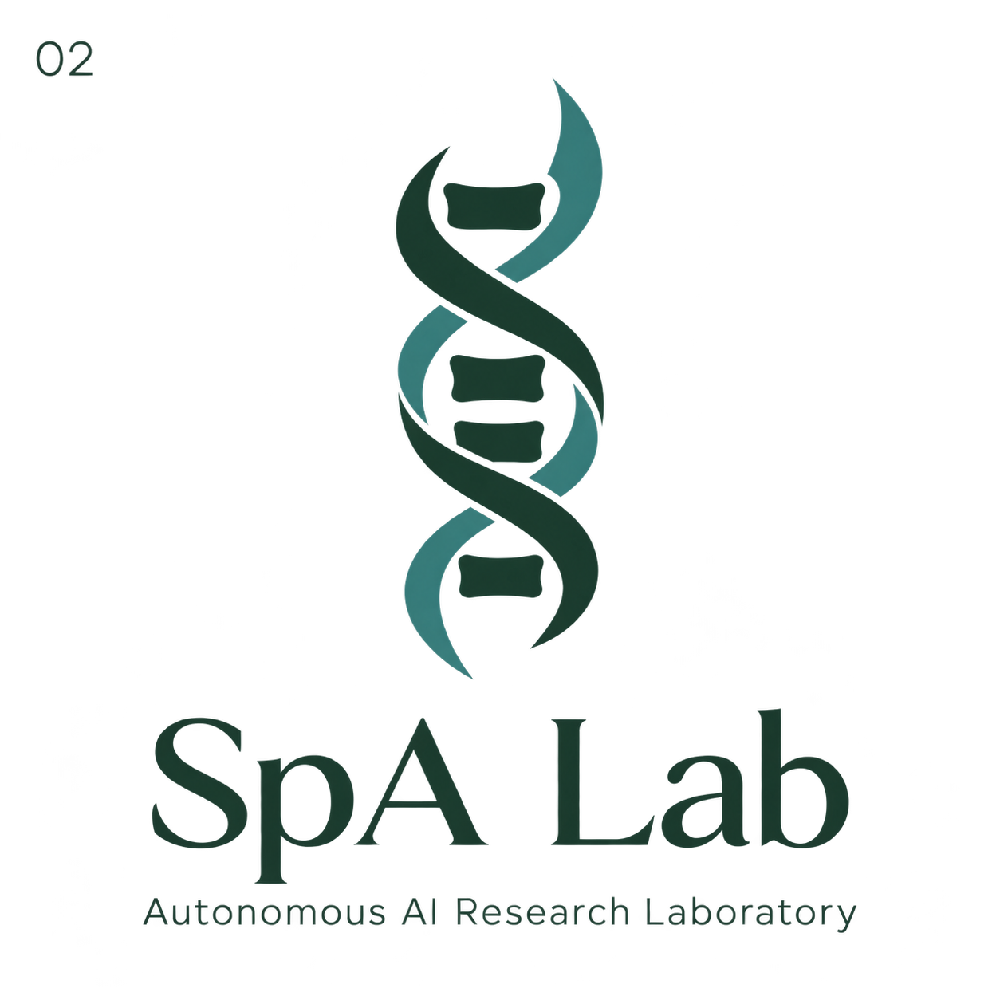

Disease mechanisms
What can biological and clinical data reveal about the processes that drive the disease—and the connections between them?
SpA Research AI Laboratory
We use AI agents to investigate axial spondyloarthritis: how it works, what may change its course, and where better treatments could come from.
An independent laboratory bringing human direction and computational research together.
An introduction, in conversation
Why build an AI research lab for axial spondyloarthritis? Start with the story behind SpA Lab, how human direction becomes a research question, and how we check what AI finds.
The conversation explores our hopes and present limits, then looks ahead to a possible future connecting AI, computational research and experimental wet labs. That future is an ambition, not a capability we claim today.
Explore the episodeTwo hosts · English · 25 min 32 sec
AI-generated conversation made with NotebookLM Deep Dive. The voices are synthetic; this is an introduction to the lab, not medical advice.
Listening notes. The P002 contrast is 21.4 percentage points, not a relative percent change. The future “tiebreaker” example is hypothetical. Failing to find a discriminating measurement does not itself mathematically prove none exists or that an experiment would be uninformative.

The visionUnderstand the disease more deeply.
Help make better treatment possible.
01 / What we investigate
Our focus is axial spondyloarthritis. We investigate the existing evidence and develop computational questions that can lead to useful, testable research.
What can biological and clinical data reveal about the processes that drive the disease—and the connections between them?
What evidence supports treatments, diet, exercise and other everyday practices, and which outcomes do they actually change?
How do we distinguish reduced inflammation, prevention of new damage and possible repair of existing structural changes?
These are research directions. Specific questions, completed studies and their limitations live in Our work ↗.
02 / How the lab is organized
Pawel sets the broad goals. Astra turns them into a research programme and coordinates the work.
Focused agents take on investigation, analysis and critical review as tasks require. Saved protocols, evidence and code give the laboratory continuity between sessions.
How the process worksHuman direction
Founder · research priorities and broad direction.
AI coordination
Project planning, task delegation, integration and progress reporting.
Focused research tasks
AI roles assigned to bounded work, with source records and checks.
Collaborators sought
Human specialists for independent scrutiny and future laboratory validation.
03 / Research in the open
Our project library brings together completed research, readable summaries, methods and data.
SpA Lab is at an early stage. We are developing autonomy through bounded research projects, with explicit limits and a growing record of work others can inspect.
Explore our work